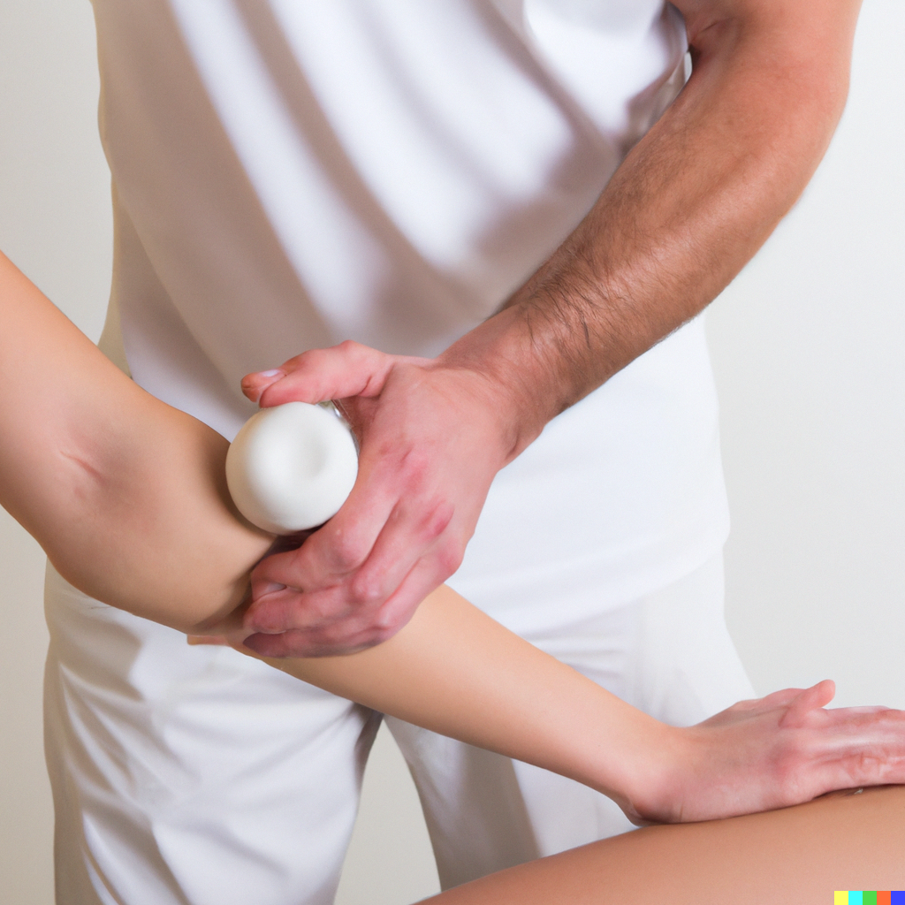
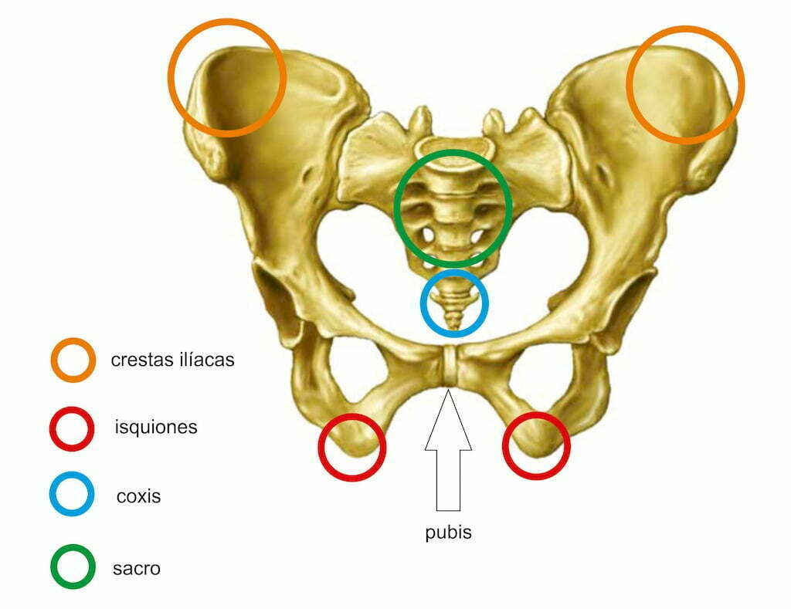
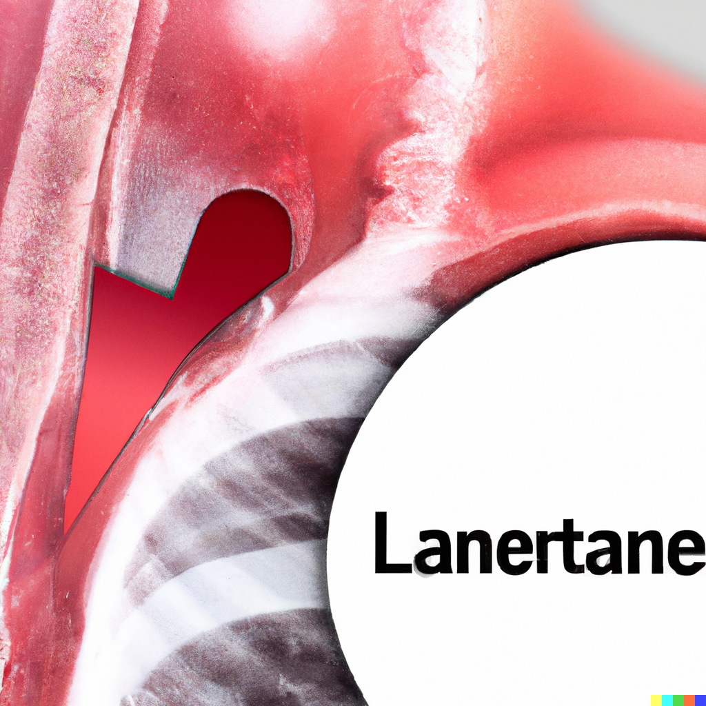
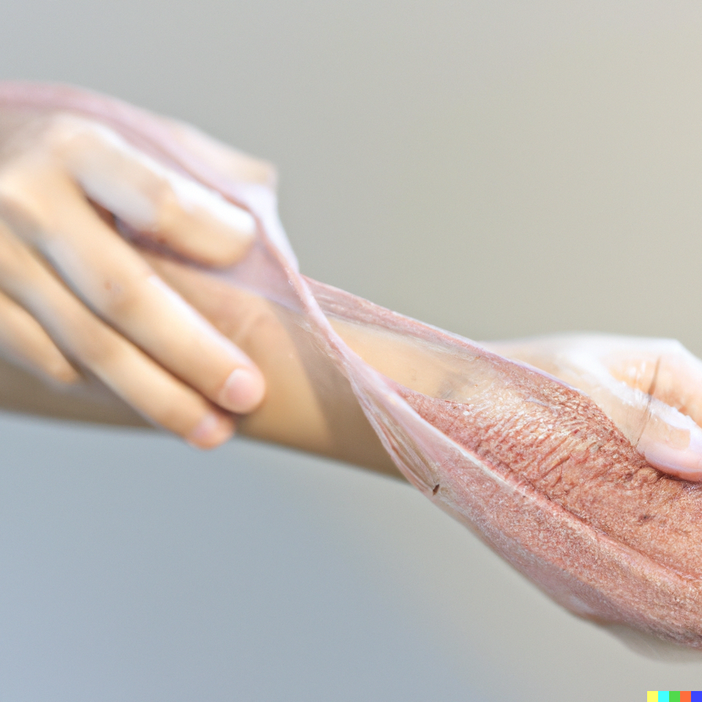

Par la physiothérapie nous vous proposons un traitement individuel adapté à vos besoins. Nos thérapeutes expérimentés dans les techniques manuelles et leur maîtrise de nos appareils modernes vous assurent un résultat de qualité. Le fitness médical mis à disposition vous permet également de prolonger vos séances ou d'intensifier votre entrainement. La physiothérapie est une discipline de première ligne dont le rôle est de vous permettre de retrouver le maximum de vos capacités physiques, que ce soit dans vos activités quotidiennes, votre travail ou votre sport. La physiothérapie favorise ainsi votre autonomie tout en vous permettant de rester actif dans votre vie personnelle et sociale.
Thérapies manuelles(SAMT, Maitland)
Triggerpoint
Pelvi-Perinélogie
Drainage Lymphatique
Crochetage
Résumé de la personne...----------------------------------------------------------------------------------------------------------------------------------------------------------------
Résumé de la personne...----------------------------------------------------------------------------------------------------------------------------------------------------------------
Vous pouvez nous contacter par téléphone ou par mail
Téléphone : 027 322 18 88 Mail : c.kuchler@in-physio.chNos horaires 8h à 12h-13h à 16h